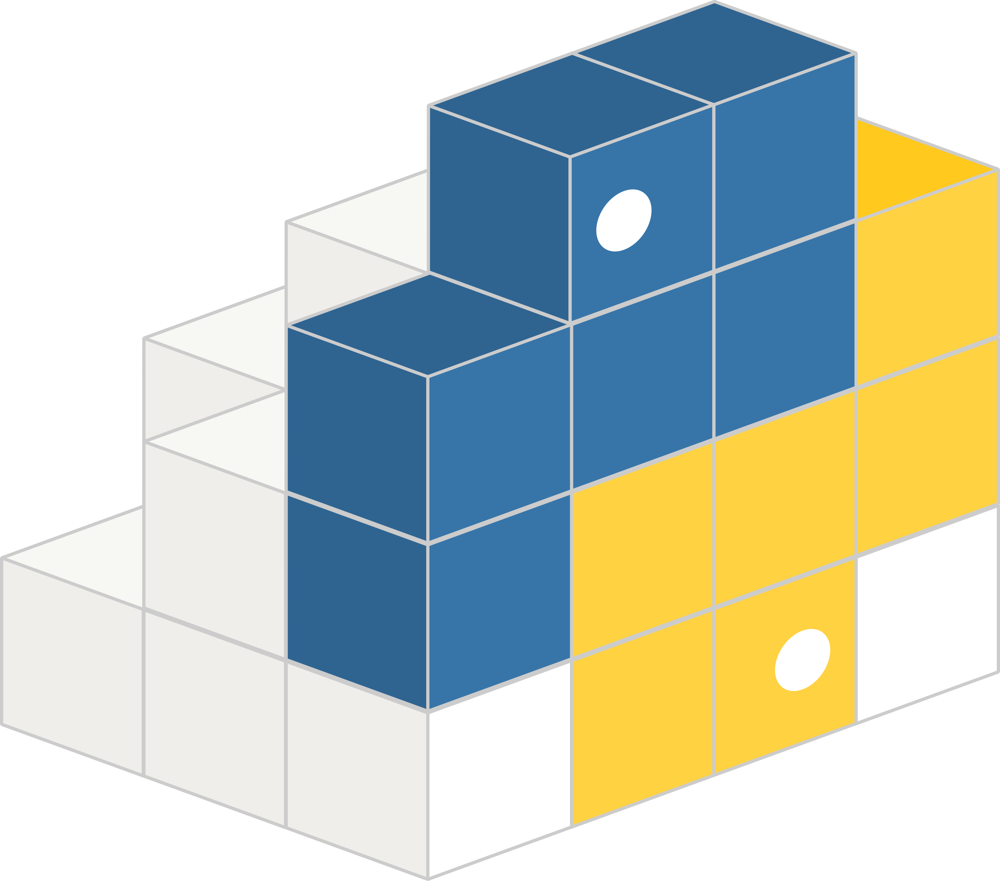
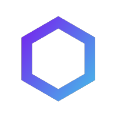

Sejarah & Profil Bahasa Pemrograman
Pelajari mengapa setiap bahasa diciptakan, kegunaan terbaiknya, serta ekosistem library dan contoh kode dasarnya.
Python
Diciptakan untuk mempermudah penulisan kode agar lebih manusiawi, mementingkan keterbacaan kode dibanding sintaksis yang rumit.
Kecerdasan Buatan (AI), Machine Learning, Analisis Data, Web Scraping, dan Scripting Otomatisasi.
print("Hello World")
Kunjungi Repositori Komunitas (GitHub) →
JavaScript
Diciptakan hanya dalam 10 hari untuk menambahkan interaksi dinamis pada browser internet yang awalnya sangat statis.
Pengembangan Website Interaktif (Frontend), Aplikasi Web Server (Backend), Aplikasi Mobile (React Native).
console.log("Hello World");
Kunjungi Repositori Komunitas (GitHub) →
Java
Diciptakan dengan prinsip "Write Once, Run Anywhere" agar kode bisa berjalan di berbagai elemen elektronik rumah tangga tanpa kompilasi ulang.
Aplikasi Enterprise skala besar, Sistem Perbankan, Aplikasi Android lama/native, dan Big Data.
public class Main {
public static void main(String[] args) {
System.out.println("Hello World");
}
}
Kunjungi Repositori Komunitas (GitHub) →
Rust
Diciptakan untuk menggantikan C++ pada sistem kritis dengan performa tinggi namun menjamin keamanan memori 100% tanpa garbage collector.
Sistem Operasi, Infrastruktur Cloud, WebAssembly, Blockchain (Solana), dan Game Engine modern.
fn main() {
println!("Hello World");
}
Kunjungi Repositori Komunitas (GitHub) →
C++
Diciptakan sebagai peningkatan dari bahasa C dengan menambahkan fitur Class/Objek agar bisa menangani proyek perangkat lunak berskala besar.
Game Engine (Unreal Engine), Perangkat Lunak Grafik 3D, Sistem Robotik, Browser Web, dan Sistem Komputasi Tinggi.
#include <iostream>
int main() {
std::cout << "Hello World";
return 0;
}
Kunjungi Repositori Komunitas (GitHub) →
Assembly
Diciptakan untuk menggantikan penulisan kode mesin (biner) yang sangat sulit dipahami manusia, dengan mengubah deretan angka tersebut menjadi simbol teks pendek (mnemonik) seperti MOV, ADD, atau JMP.
Pembuatan sistem operasi tingkat paling dasar (kernel), driver perangkat keras, reverse engineering malware, dan optimasi performa maksimal pada mikroprosesor.
section .data
msg db 'Hello World', 0xa
section .text
global _start
_start:
mov eax, 4
mov ebx, 1
mov ecx, msg
mov edx, 12
int 0x80
Kunjungi Repositori Assembler Komunitas →
Machine Code (Kode Mesin)
Ini adalah bahasa alami dari sirkuit elektronik komputer. Sirkuit digital CPU hanya mengenal kondisi "On" (ada arus listrik) dan "Off" (tidak ada arus), yang diwakili oleh angka 1 dan 0.
Satu-satunya kode yang dieksekusi langsung oleh arsitektur CPU tanpa perlu proses penerjemahan atau kompilasi lagi.
B8 04 00 00 00 BB 01 00 00 00 B9 ... (Deret biner/hex fisik CPU)Tidak ada repositori kode terpusat (Arsitektur Hardware)
Perangkat Lunak & Ekstensi Koding
Rekomendasi perangkat lunak standar industri untuk mulai menulis dan mengeksekusi kode program:
- VSCode (Standar): Paling populer dan kaya fitur.
Unduh VSCode - VSCodium (FOSS & Ringan): Versi 100% open-source dari VS Code. Tanpa pelacak telemetri sehingga jauh lebih enteng.
Unduh VSCodium
Mesin penerjemah kode agar dapat diproses langsung oleh sistem operasi:
- Python Runtime: Mesin penerjemah file berkstensi
.py.
Unduh Python - Node.js: Runtime untuk mengeksekusi file
.jsdi komputer tanpa web browser.
Unduh Node.js
Alat bantu auto-complete, merapikan struktur teks, dan mendeteksi kesalahan ketik otomatis di berbagai perangkat:
Dukungan IntelliSense koding, pemformatan otomatis, dan debugging file Python.
VSCode Marketplace Source →OpenVSX Marketplace Source →
Acode Marketplace Source →
Merapikan jarak spasi, tanda petik, lekukan, dan struktur baris kode secara otomatis saat file disimpan.
VSCode Marketplace Source →OpenVSX Marketplace Source →
Acode Marketplace Source →
Fitur penyorotan sintaksis koding (*syntax highlighting*), navigasi fungsi, dan auto-complete cerdas untuk bahasa C/C++.
VSCode Marketplace Source →OpenVSX Marketplace Source →
Acode Marketplace Source →
Solusi belajar koding gratis, aman, dan sangat ringan langsung menggunakan prangkat Android:
- Acode Editor: Aplikasi teks editor open-source yang sangat lancar untuk koding web (HTML/CSS/JS).
Unduh Acode - Termux Terminal: Emulator Linux murni di Android untuk menginstal paket Git, kompiler Python, atau C++.
F-Droid Source / Github Source
Ekosistem Pemrograman
Memahami bagaimana bahasa pemrograman bekerja di belakang layar bersama lingkungannya:
- Compiler:
Menerjemahkan seluruh kode sumber sekaligus menjadi file biner siap pakai sebelum dijalankan (Contoh: C++, Go, Rust). - Interpreter:
Menerjemahkan dan mengeksekusi kode baris demi baris secara langsung saat program berjalan (Contoh: Python, Ruby).
Sistem perangkat lunak yang dirancang untuk memfasilitasi eksekusi program. Contohnya adalah V8 Engine / Node.js untuk JavaScript atau JVM untuk Java.
Alat untuk mengelola, menginstal, dan memperbarui pustaka eksternal secara otomatis.
- pip (Ekosistem Python)
- npm / yarn (Ekosistem JavaScript)
- Cargo (Ekosistem Rust)
Jembatan komunikasi yang memungkinkan satu aplikasi atau sistem bertukar data dengan aplikasi lainnya secara aman.
- RESTful API / GraphQL:
Protokol standar yang paling sering digunakan untuk mengirim data (biasanya dalam format JSON) antara sisi frontend (aplikasi/web) dan backend (server).
Tempat penyimpanan data aplikasi secara terstruktur, permanen, dan aman di sisi server.
- Relational (SQL):
Menyimpan data dalam bentuk tabel kaku yang saling berhubungan. Sangat aman untuk transaksi keuangan. (Contoh: MySQL, PostgreSQL). - Non-Relational (NoSQL):
Menyimpan data dalam bentuk dokumen fleksibel mirip JSON. Sangat cepat untuk data berskala besar. (Contoh: MongoDB, Redis).
Pemisahan ruang kerja koding untuk menjaga keamanan sistem agar eror saat koding tidak merusak aplikasi yang sedang diakses pengguna asli.
- Localhost / Development:
Lingkungan uji coba di dalam komputer pribadi developer sendiri untuk menulis dan mengetes fitur baru. - Production:
Lingkungan server asli yang sudah terhubung dengan internet luas dan diakses langsung oleh pengguna atau pelanggan publik.
Rumus & Perbandingan Logika Dasar
Meskipun bahasanya berbeda, logika dasarnya tetaplah sama. Bandingkan langsung sintaksis dasar di bawah ini.
Menciptakan ruang penyimpanan data di dalam memori komputer.
nama = "Andi" umur = 25
let nama = "Andi"; let umur = 25;
string nama = "Andi"; int umur = 25;
Membuat keputusan berdasarkan kondisi yang dipenuhi.
if nilai >= 75:
print("Lulus!")
else:
print("Mengulang..")
if (nilai >= 75) {
console.log("Lulus!");
} else {
console.log("Mengulang..");
}
if (nilai >= 75) {
std::cout << "Lulus!";
} else {
std::cout << "Mengulang..";
}
Menjalankan perintah yang sama berulang kali sampai batas tertentu.
for i in range(1, 4):
print("Langkah :", i)
for (let i = 1; i <= 3; i++) {
console.log("Langkah : " + i);
}
for (int i = 1; i <= 3; i++) {
std::cout << "Langkah : " << i << "\n";
}
Membungkus blok kode agar bisa digunakan berulang kali dan dapat mengembalikan nilai.
def tambah(a, b):
return a + b
hasil = tambah(5, 3)
print(hasil) # Output: 8
function tambah(a, b) {
return a + b;
}
let hasil = tambah(5, 3);
console.log(hasil); // Output: 8
int tambah(int a, int b) {
return a + b;
}
int main() {
int hasil = tambah(5, 3);
std::cout << hasil; // Output: 8
return 0;
}
Menyimpan banyak data di dalam satu nama variabel tunggal menggunakan indeks urutan.
# Membuat list buah buah = ["Apel", "Jeruk", "Mangga"] # Mengambil data pertama (indeks 0) print(buah[0]) # Output: Apel
// Membuat array buah let buah = ["Apel", "Jeruk", "Mangga"]; // Mengambil data pertama (indeks 0) console.log(buah[0]); // Output: Apel
#include <iostream>
#include <vector>
int main() {
// Membuat array/vector buah
std::vector<std::string> buah = {"Apel", "Jeruk", "Mangga"};
// Mengambil data pertama (indeks 0)
std::cout << buah[0]; // Output: Apel
return 0;
}
Menggabungkan dua kondisi atau lebih untuk menghasilkan satu keputusan logis.
# Menggunakan kata kunci 'and' dan 'or'
if nilai >= 75 and kehadiran >= 80:
print("Lulus Baik")
if status == "admin" or status == "owner":
print("Akses Diterima")
// Menggunakan operator '&&' (AND) dan '||' (OR)
if (nilai >= 75 && kehadiran >= 80) {
console.log("Lulus Baik");
}
if (status === "admin" || status === "owner") {
console.log("Akses Diterima");
}
// Sama seperti JavaScript, menggunakan '&&' dan '||'
if (nilai >= 75 && kehadiran >= 80) {
std::cout << "Lulus Baik";
}
if (status == "admin" || status == "owner") {
std::cout << "Akses Diterima";
}
Panduan Git & Kontribusi Proyek
Bagaimana para developer profesional bekerja bersama? Mereka menggunakan kontrol versi bernama "Git" serta wadah kolaborasi (seperti GitHub/GitLab).
Menyalin repositori/proyek koding dari GitHub ke komputer lokalmu.
git clone [URL-GITHUB]
Membuat cabang koding baru agar fitur yang kamu buat aman dan tidak merusak kode utama proyek.
git checkout -b fitur-baru
Menandai dan menyimpan riwayat kodingmu di komputer lokal sebelum dikirim.
git add . git commit -m "fitur baru selesai"
Mengunggah hasil pekerjaan koding dari komputer lokalmu kembali ke GitHub secara online.
git push origin fitur-baru
Meminta ketua tim atau pemilik proyek utama di GitHub untuk meninjau dan menggabungkan kodemu ke proyek utama.
Developer yang hebat tidak membuat semuanya dari nol. Mereka menggunakan kode buatan komunitas (libraries/package) melalui layanan berikut:
Pustaka terbesar untuk JavaScript dan pengembangan web frontend/backend.

PyPI (pypi.org)Rumah bagi semua library Python untuk AI, data science, dan scripting.

Maven CentralTempat mencari dependensi terstruktur untuk pengembangan Java enterprise.
Situs resmi manajemen paket handal berkinerja tinggi milik Rust.